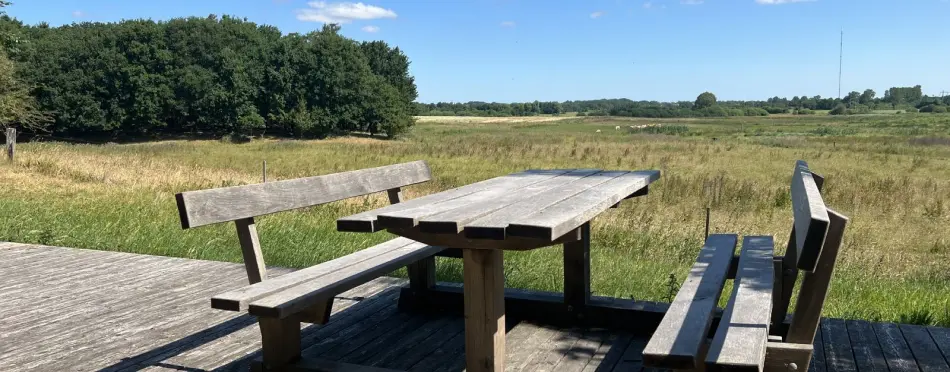

Verninge Mose
Skøn naturperle med rig mulighed for at gå på opdagelse
Lige lidt udenfor Verninge findes der en skøn naturperle på 13,8 ha stort vådområde med rig mulighed for at gå på opdagelse i naturen. Der er anvist en 2,5 km. vandrerute, hvor man kan være heldig og finde flere forskellige arter såsom kuglemuseurt, kattehale og vandmynte, der alle trives i området. I området er der også kvæg, som passer og plejer naturen til gavn for de mange plantearter. Fra udkigsposten har du god udsigt til fugle, der søger føde ved søen og på engen. Her ses, afhængigt af årstiden, gæs, ænder, vadefugle på træk. I sensommeren spæner små flokke af stære rundt og leder efter smådyr i det korte græs.
Vådområdet blev i 2018 skabt ved at omlægge og afskære dræn. På den måde kan vandet løbe frit ud på engarealerne og om vinteren vil vandløbene i området gå over sine breder. Formålet med projektet er at reducere udvaskningen af kvælstof, som tilføres vandløbet og som i sidste ende påvirker vore sårbare kystvande. Verninge Mose gennemskæres af Holmehave Bæk, som løber ud i Odense Å og videre ud i Odense Fjord.